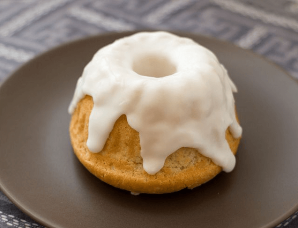

Sweetroll

A popular and easy-to-make desert in the world of Skyrim.
Ingredients:
- 1 large bundt tin
- 2 cups plain flour
- 1 tsp baking powder
- 3/4 cup milk
- 3/4 cup water
- 1/2 cup caster sugar
- 1 cup maple syrup or honey
- 3 eggs, beaten
- 60g butter, melted
- 1 vanilla pod, scraped
- 3 tsp cinnamon powder
For glaze:
- 1 cup melted butter
- 1 cup icing sugar
- 1 vanilla pod, scraped
Instructions:
- Preheat oven to 200C/392F and grease your bundt tin well with butter.
- In a large mixing bowl, combine all the baking ingredients and mix well. Pour into the bundt tin/s and bake for 45 minutes, or until brown and risen. It should be firm and crusty on the outside. Flip onto a wire rack to cool before transferring to a plate.
- For the glaze, combine the melted butter, sugar, and vanilla in a small bowl and whip until well blended. Drizzle over the top of your sweetroll and wait til icing has hardened before eating.